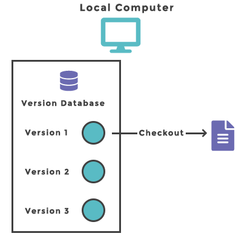
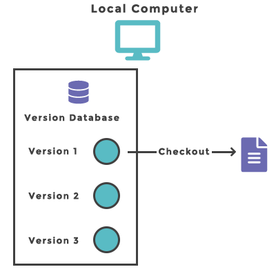
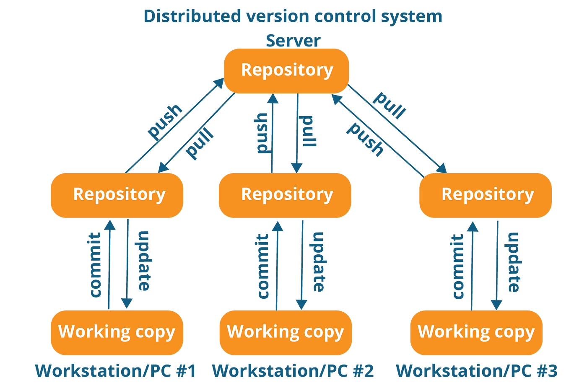
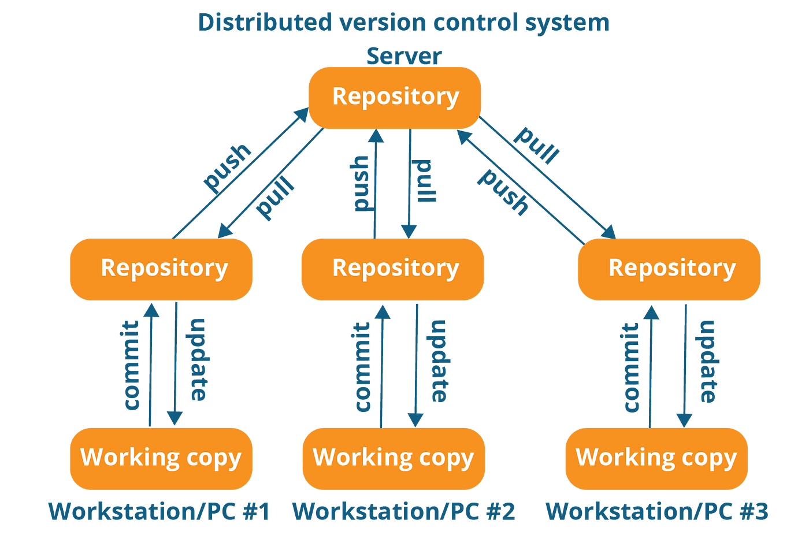

Git és GitHub - Bevezetés
- Verzió (version): egy régebbi állapota egy állománynak vagy állományrendszernek.
-
Verziókezelő Rendszer (Version Control System -
VCS): egy olyan rendszer, amely rögzíti egy állományban vagy
egy állományrendszerben adott idő alatt bekövetkező
változásokat, lehetőséget biztosítva, hogy egy későbbi
időpontban előhívhatóak, összehasonlíthatóak legyenek.
- Látható ki, mikor, mit csinált a különböző verziókban.
- Jellemzően szoftverfejlesztéskor használjuk.
- De alkalmas lehet képek, webfejlesztések változásainak folyamatos rögzítésére is.
-
Legegyszerűbb verziókövetés, ha saját magunk mindig
létrehozunk egy új (időbélyegzővel ellátott) mappát és abba
átmásoljuk az állományokat, majd módosítjuk azokat.
Ez a módszer nagyon sok hibalehetőséget hordoz magában. Jó mappában dolgozunk?
-
Lokális Verziókezelő Rendszer (Local Version Control
System - LVCS): ebben az esetben a saját gépünkön van egy lokális
adatbázis, amelyben eltároljuk a változtatásokat.
- Mindig egy, a gépre mentett helyi másolattal (checkout).
- A változtatásokat javítócsomagokban (patch) tárolja. Ezek összefűzésével tudja visszaállítani a rendszert.
Egy példa LVCS-re: RCS.
-
Központosított Verziókezelő Rendszer (Centralized
Version Control System - CVCS): ebben az esetben egy központi gépen tároljuk el az
adatbázist a különböző verziókkal, amelyhez bármely
felhasználó hozzáférhet.
- Részben rálátásunk van arra, amit a többiek csinálnak.
- Központi felügyelet könnyen megvalósítható. Ki mit csinálhat.
- Legfőbb hibaforrás, hogy ha bármi történik a központi géppel, akkor minden elveszhet.
Példák CVSC-re: CVS, Perforce, Subversion
-
Elosztott Verziókezelő Rendszer (Distributed Version
Control System - DVCS): ebben az esetben minden gép eltárol egy teljes adatbázist
az eredetiről (mirror). Ez
tartalmazza a teljes történet (history) az állományokról készült legutolsó pillanatfelvétel
(snapshot) mellett.
- Így bármely gépről visszaállítható a teljes adatbázis.
- Nagy előnye, hogy egyszerre több különböző adatbázissal tudunk dolgozni szimultán módon.
Alapvető dolgok:
 



 
